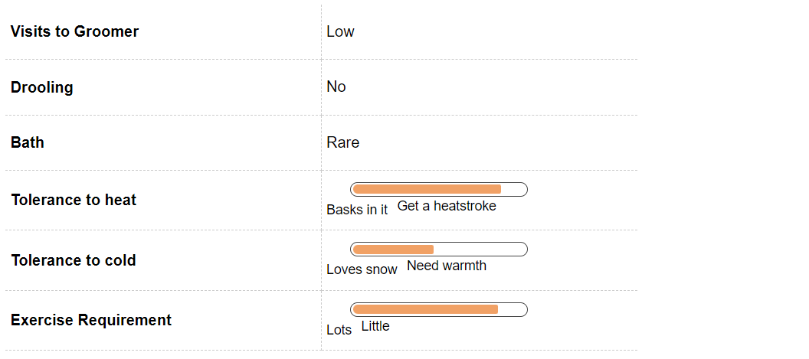
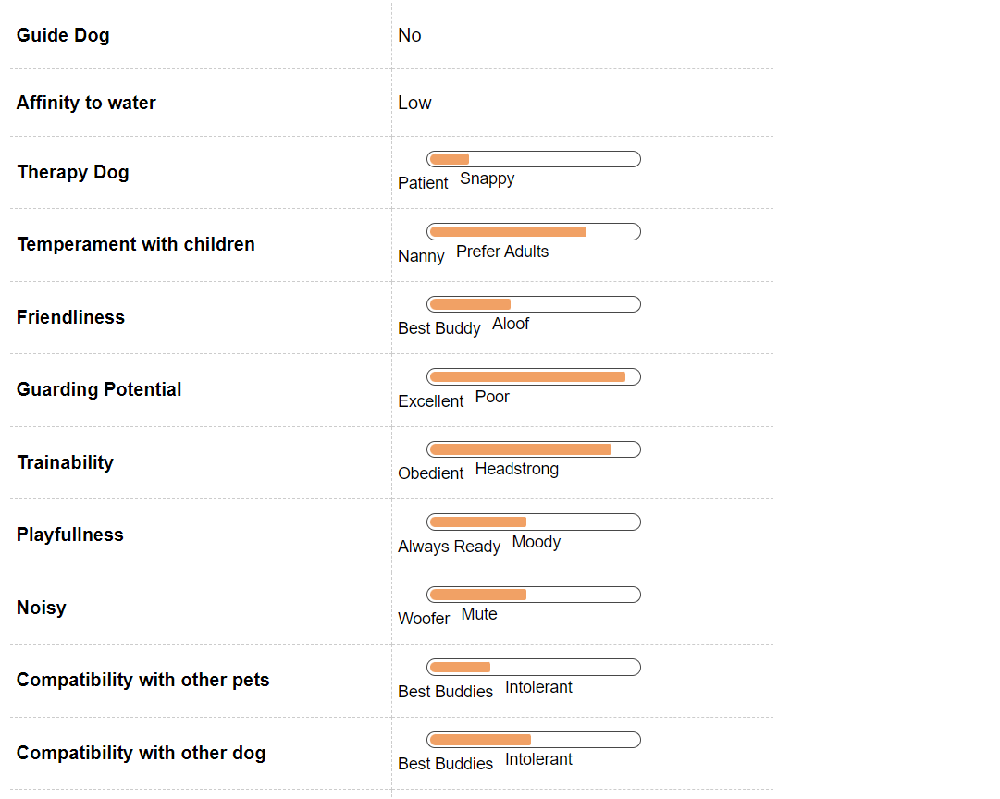

Pit Bull Dog Breed Information
Introduction
This is an affectionate breed weighing around 10-35kgs and is medium in size. This breed widely misunderstood as being terrifying is probably one of the most affectionate breeds out there. It’s stubborn attitude coupled with its loyalty often makes it a favorite among families which need a breed which would both protect them and love them. American Pit Bull terrier is a pure breed and its life span is about 10-14 years.
It is said that when one refers to pit bull, it not only means Pit bull terrier but a number of breeds simultaneously. Pit bull terrier can also refer to American Staffordshire terrier and maybe some other breeds which share certain features of the breed. There is surely some confusion related to the name of this breed. Another interesting thing to note here is that though the breed is not of American origin but brought into the states by immigrants from England, it is quite funny because the origin of this breed precedes the discovery of America. This breed was bred to be fighter specie, the cross between an English Bull dog and a terrier. Hostility towards human was one of its major behavioral traits. Another interesting story of how Pit Bull had pit attached to its name comes from this sport that this breed used to take part in, where pits were filled with rats and this breed was let loose in them. The competition was who killed most rats in the shortest period of time. Because this sport happened in a pit, that is why they were called Pit Bull Terrier. This breed has also let a celebrity life as it appeared on a number of advertisements for US army recruitment. Adding to their celebrity status, this breed has appeared on the covers of life magazine a total of 3 times, which is way more than any other breed. Contrary to their ferocious nature, this breed has been a hit with the kids and it was often referred to as the nanny dog because of its ability to take care of children. This breed is also exceptionally good at climbing over fences and finding its escape route. Despite their reputation of being ferocious, this breed isn’t the best guards in town, they can be too trusting and let their fake friends enter the compounds. There is a member of their breed which comes with a blue nose and because of this cute looking feature, it is pretty sought after. This breed I also born with a wrinkly forehead but that smoothens down as they grow older. There are also myths related to the pain feeling ability of this breed, they do feel pain but can easily block out the pain when they want.
There are some controversies related to pit bulls and their temperament, this breed is very friendly towards humans but can be slightly aggressive towards other breeds, to get over that they need to be put through proper social training. This breed at one time the favorite among American’s has quickly become a breed which has been abused a lot. Pit bulls are abused a lot because they are used for dog fights. Pit bulls also have suffered through different name changes. This breed has been banned from England and Wales since 1991.
History
It is said that American Pit Bull Terrier has been around for over 500 years. There are a number of wide ranging theories about how this breed came into existence. This breed is also famously and often incorrectly known as the American Bully. Utmost importance has been placed on the aspect of selective breeding whenever the history of American Pit Bull Terrier is spoken about. One of the most popular theories of how this dog came into existence is how a strong pit bull was found by the breeders and it was bred with numerous terriers to come up with this American pit bull terrier. This breed was bred in English Isles and were brought to the states after a couple of breeds were produced. This was a sporty breed and used for purposes like bear baiting and bull baiting when it was still based out of United Kingdom. When immigrants started coming in to America, pit bulls were brought as family members. They were bred as fighter dogs because of their intelligence and loyalty. They received a lot of publicity because of their qualities. However fierce they are thought to be, a lot of testimony shows that this breed was very good with kids to live up to the expectation of nanny dogs that Pit bulls were. A Number of stories about famous pit bulls do the rounds these days. Somewhere around the 20th century, this breed was used by the Americans as a catch dog which could look after cattle.
It is ironic that the Pit Bull is now banned in England though it owes its origin to the British Isles. They were brought to American by the English immigrants. The name says for them, the breed was bred to fight in a pit as a part of a sport. They were made to participate in sport called baiting a largely inhumane blood sport.In earlier days the dog was put in a pit with bulls and bears. This was banned around 1800s. The worse bit about this inhumane sport was that if the dog bit any of the handlers then they were culled on the spot as they were rendered unfit to be bred further. The Pitbull draws its dubious reputation from this.
Unique Aspects
This is one of those few breeds that you cannot consider as a loving family pet for young children. They were bred to fight and can be a little temperamental at times. In earlier times they were bred to fight and there can be moments when this dog will not show any prior signs of aggression but will attack within a short span. They can be easily provoked and can quickly turn aggressive. So, this may not be the ideal breed for you if you have young children in the family.
Pitbulls are not conducive with other pets as well. If you have another dog then remember that he or she cannot be left unattended when there is a Pitbull in their vicinity. They are not good with other smaller breeds also as they have a strong prey drive and can at times stalk small pets. They need a house with a yard they do not do well in an enclosed apartment kind of living. They are brilliant escape artists and should be kept under a close watch.
Fun Trivia

The Pitbull is dreaded by many. Most people are afraid of them though you have to remember that not all Pitbulls are aggressive. There are some lines that show still shows traits of bull fighting but they are known to be good family pets as well.
Here is a small list of movies and celebrities that you share your pet with among many.
Movie Character
You will be surprised that the dog accompanying the kids in the movie ‘Little Rascals’ was a Pit Bull. Along with that they have featured in the movie Epic and Beyond the Myth.
Celebrity Pit Bull owners
The reputation of Pitbull has not stopped celebrity owners from keeping them as pets. Hellen Keller was a proud owner of a Pitbull, Jessica Biel, Alicia Silverstone, Dr. Phil and Jon Stewart are proud owners of Pitbull.
Vital Stats:
Dog Breed Group:
Terrier Dogs
Height:
17-19 Inches
Weight:
14-30 Kg
Life Span:
11 to 12 years
Pros and Cons
| Pros |
Cons |
|
It is a healthy breed which doesn’t require a lot of maintenance. It has good health and the grooming needs are also low for this breed. It is also a funny breed and its antics will keep its owners entertained for long periods. This breed is very loving to its owners and is a loyal breed.
|
This breed is slightly clingy towards its owners. They get attached quickly and separation makes them anxious. This specie tends to take out its boredom by being destructive so there is a chance that you might come home to destroyed articles. American Pit Bull Terrier is also banned in a number of cities across the world so there are some legal hassles concerning this breed. In India though there is no ban on Pit bulls but there might be some restrictions relating to imports. This breed also needs extensive training and socializing which can be time consuming for its owners.
|
Pit Bull Maintenance & Effort

Grooming
The coat of American Pit Bull terrier needs to be brushed at least once every week. The brush should be either have soft or medium bristles. Brushing has a lot of benefits such as getting rid of dead skin cells and reducing hair fall. Brushing needs to be done carefully and sensitive areas need to be looked at carefully. One can also use a wet wipe to get rid of the dirt on the coat of the breed. Regular wiping can ensure that the coat is not laden with dust and grim. Avoid rubbing the coat rather gently wipe it off. The ears of the breed need to be cleaned properly at least once a week, the ears are perky which makes them prone to dirt and wax. There can be a mild canine cleaner that can be used to clean the years of the breed. While cleaning the years, watch out for early signs of ear infections. Brushing the teeth of this breed once a week will also keep away oral hygiene problems away. Nail trimming should also be done once a while to keep the nails from clipping and breaking.
There are a number of colors that this breed is available in. Some colors that this breed is available are black, tan, blue, gray, yellow, red, white and a combination of black and tan. Depending upon the breeding there can be various other combinations of colors that can be available.
American Pit Bulls are medium sized, short haired dogs. The coat is not coarse but rather smooth. It also has a certain shine to it. The shedding of the coat is also towards the lesser side.
Your Pitbull is not that cumbersome when it comes to grooming. This is a smooth and shorthaired coat dog that is easy to groom. They just have to be brushed with a firm bristle brush regularly. If you have them at home then the will be low maintenance as they are average shedders.
They have short coat that is shiny to look at and stiff to touch. Along with this you would have to follow the regular grooming procedure such as brushing your dog’s teeth at least two to three times a week and giving it regular bath to maintain cleanliness and stop spread of any germs or infection from spreading.
Remember that your Pitbull has to be learned to be examined at a young age, this will prevent him from snapping later in his or her life. Puppies in general are not comfortable with someone checking their paws. Adapt this as a grooming technique from the very beginning to ensure a healthy companionship.
Pit Bull Hair & Coat
Pit Bull Health & Care
Common Health Issues
There are some health issues which this breed is prone to even though it has a good skeleton structure. One of the diseases that this breed is most prone to is Hip Dysplasia. It happens because the joint between the hip and the legs isn’t functioning smoothly. It is pretty painful condition for the pet and can result in limpness. The cure for this disease is surgery but it can be prevented by managing the weight of the terrier. Generally the older breed can have cataracts where the eye sight becomes clouded. It is often left untreated when it occurs in older breed but is treatable through surgery in the younger ones. There are certain heart conditions that the pet is prone to, if they aren’t of severe nature and the dog is otherwise healthy they could be ignored otherwise surgery and medication is required. Every dog breed can develop some common allergies to certain foods etc which are easily treatable with proper medication. The easiest way to avoid any kind of disease in this breed is through proper exercise and a healthy diet. It is an energetic breed which requires a lot of exercise to stay healthy.Your Pitbull is generally a healthy and sturdy breed without having many problems. As every other breed even Pitbull is prone to some common diseases. There are a few that are developed due to the nature of the work and activity. There are some issues that are present because of the linesge.
One of the most common problems with Pitbull is of hip dysplasia. This is one of the most common problems in high activity level dog. There is an abnormal growth in the hip, though this can be easily treated with a surgery. The other disease is mostly present because of hereditary issues in Pitbull. Your Pitbull can developed cataract very easily the frequency is much more common in this breed when compared to others. This cataract is almost similar to that of humans. The lens of the eye is normal but it can become cloudy and will not able to transmit light to the retina properly. This also can be easily corrected with surgery.
Allergies can be a common hindrance to many breeds. Allergies from dust and fleas are very common in Pitbulls. This can give rise to itchy skin and rashes. It will result in itchy skin for your dog that at times can give rise to abrasion. A visit to a vet will help you to get rid of the problems easily. These are just few common diseases, you puppy or dog might not be affected of this any time during his lifetime.
Pit Bull Behavior

Temperament
Pitbull was developed for fighting so be prepared to handle a temperamental dog right from the beginning. The behavioral traits of this breed demand this from him or her. The aggression is present in many lines of Pitbull even today and if you have cats and dogs in the house then this may not be the ideal breed for you as it may have a go at it anytime.
You also have to supervise your dogs at all times when taking him out to a park or a walk if he is getting aggressive then remove him immediately from that area as it can give rise to a ugly fight at times. If you have young kids at home then this may not be the ideal pet. They are recommended for mature handlers and certainly not for first time dog owners. Your kids will not be able to identify if your dog is getting aggressive and can accidently trigger temperamental issues with them.
Your Pitbull needs to be socialized early in life. If they are isolated for long times they can become aggressive towards any new comers. They need regular exercise so if you can devote time for regular runs or jog then this is the breed for you.
Environment
Your Pitbull will not be able to adjust to an apartment life. He or she will need ample space to move around and plenty of exercise so this will be the perfect breed to keep in a house that comes with a yard, preferably a fenced yard as they are big escape artists. This breed is considered trainable but then they need positive reinforcement time and again to help them be perfect for your family.
If you have other pets in your house then this may not be the perfect breed for you. Most of the lineages show traits of fighting and they might consider the other pet as a threat and attack it also. If you young kids at home and are a first time owner then this may not be the ideal breed for you. They may not know how to deal with them.
Pitbull will be good for all experienced pet owners. If you know how to deal a dog then this will be the perfect breed for you. If trained properly they can become good pet contrary to belief. Proper handling and training will ensure to keep a check on the aggressive temperament of this breed.
Training & Intelligence
Pitbull is trainable, if you are getting a puppy it is advisable to check for the lineage of the parents before you get one home. If it shows parents with traits of being reared for a fight then your pup may not be the pet, which you want.
This is an intelligent breed but always remember that harsh training will never yield results for you. One has to be sensitive to the issue and maintain patience when providing training to your dog. The other thing is that your Pitbull will need training all through his or her life. Unlike other breeds the training does not end here, it will continue all through life.
Pit Bull Breeding
Procreation
Breeding or mating your Pitbull is not much trouble at all. They are generally a healthy breed and other than the lineages that show aggression can be considered good pets. The average litter size for your Pitbull is around five to eight puppies on an average. An average male and female Pitbull attains sexual maturity anywhere between six to nine months of age. Though you puppy is still very young to breed now.
A dog takes around 18 months to reach his full height and structure. It is advisable to breed your dogs after at least two years of age. If you are first timer at breeding then taking a vets care is advisable. You can get all the colors of the breed in the same litter or can be of the same color as well.
Puppies
A Pitbull puppy will need a little more socializing than any other average breed pup. They have an internal trait that does not make them friendly with other breeds. He or she has to be trained from the beginning to enjoy the company of other dogs. If you have smaller animals as pet in your home then we would not recommend getting a Pitbull pup home.
If they are interacted regularly with other breeds then one can modify their natural playful attitude. They need to be trained early in life to repress their aggressive behavior. You have to remember something that this breed will not be able to take a squabble very easily, just remove the puppy from the premises if there is a small issues also as it may turn into a serious fight if your Pitbull feels threatened.
Pit Bull Appearance

Body
There has been lot said about a Pitbull, they stature and alert eyes have made them a talk of among Kennel Clubs and breeders for a long time. There has been a long debate for the same. There will be lot of owners who will vouch for their pets and there will be some that have got the other side of the coin for this breed. Just remember that this for the experienced owners and will be your companion for anything between 12 to 14 years.
Pitbull should have broad skull and will be of medium length. The neck is heavy and has a slight arch, which is tapering from the shoulders to the back of the skull. There is no looseness of the skin in a Pitbull. There shoulder are strong and muscular with blades, which are wide. The body of your Pit is well sprung in ribs and is a little deep in the area. The forelegs are set apart and have a deep chest. The tail is set low and has a fine tapering point. The coat is short and close to the glossy, which is stiff and touch and looks glossy. They come in a variety of colors; the most common are white, black and tan. It can be solid, partial or patched.